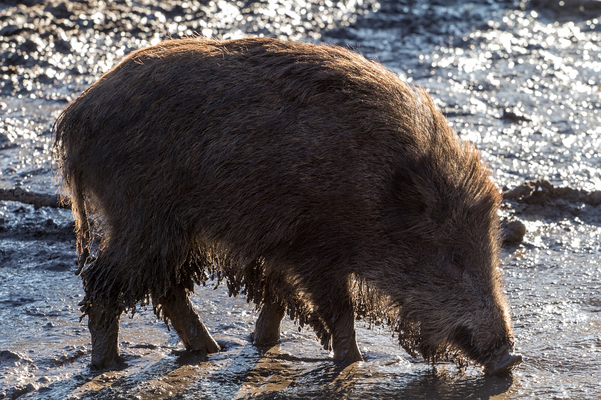
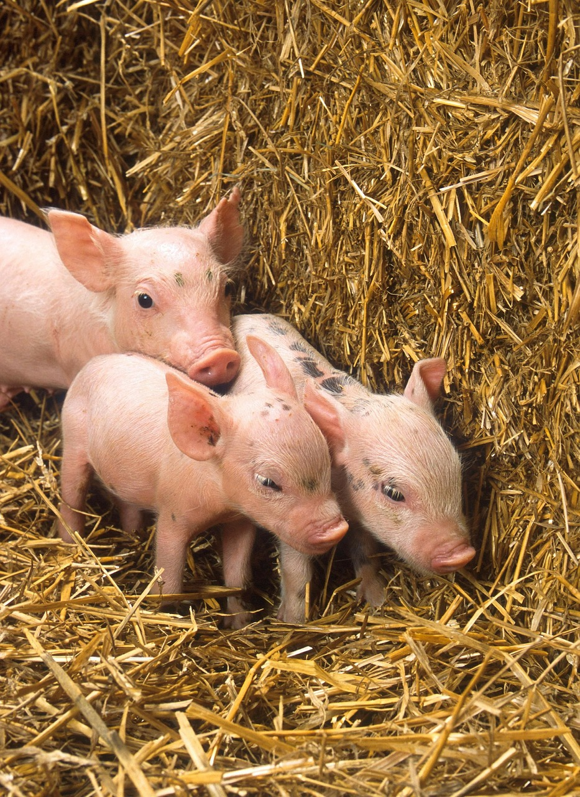

Voedsel voor varkens
Zoals gezegd op de homepagina, zijn varkens alleseters. Dit wil dus zeggen dat ze zowel vlees, als groenten en fruit eten. Toch wordt dit niet gedaan omdat ze dan agressief worden en mensen gaan aanvallen. Daarom worden er plataardige producten gegeven zoals tarwe (te vinden in brood), appels, sla enz. Dit kan evengoed etensresten zijn.

Verzogen en verblijf
Varkens hebben weinig verzoring nodig en leven van nature zelfstandig. Varkens vinden het leuk om in de modder te ploeteren. Zo kunnen ze hun huid beschermen tegen beten van vliegen of andere bijtende insecten. Voorzie daarom een grote goed omheide stuk grond met modderbaden. Voorzie ook een shuur of stal zodat het varken in de winter kan shuilen voor de kou. Volgens de wet is er minstens één m² nodig voor een volwassen varken.

Biggen zogen
Biggen zijn altijd leuk om te krijgen, dat jong nieuw leven... Maar soms moet een mens wel eens ingrijpen tijdens en vlak na de geboorte. Dit is niet altijd zo gemakkelijk. Daarom staat alles hier nog eens op een rijtje.
- Normaal moet er tussen elke big ongeveer 15 minuten zijn. Als dit plots oploopt naar 30 minuten of meer, moet er ingegrepen worden. Dan moet je de biggen met de hand uithalen.
- Als je merkt dat de zeug zich agressief tegen over de biggen houd, is het verstandig om de biggen even appart te houden en na de bevalling de biggen er opnieuw bij te laten.
Vlak na de geboorte van de biggen is het belangrijk om de biggen zo rap mogelijk biest te laten drinken van de zeug. Biest is de eerste melk van een zug na de geboorte en bevat antistoffen van de zeug die belangerijk zijn voor een goede start van de biggen.
Zorg ervoor dat het niet te warm of te koud is in de stal. In een te koude stal is het namelijk mogelijk dat de big sterft door onderkoeling. Een goede temperatuur is tussen de 35 en 37°C in het biggennest. Naarmate ze groeien, mag de temperatuur dalen. Voor de zeugen is een temperatuur tussen de 18 en 23°C normaal. Een opmerkelijk verschil dat noodzakelijk is. Je kan het aan het gedrag van de biggen zien dat het te warm of te koud is. Bij te warme ruimte liggen de biggen te versprijd van elkaar en liggen volledig uitgestrekt. Bij een te koude temperatuur is dit net andersom. Ze liggen te dicht bij elkaar waardoor de onderste biggen kunnen stikken.